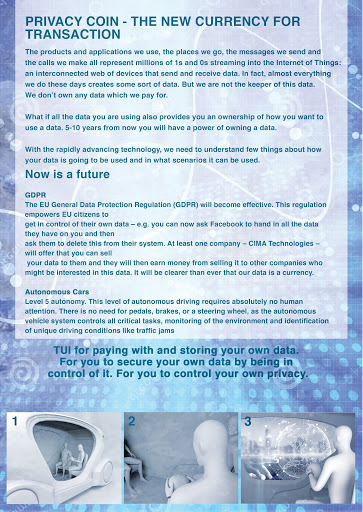

Privacy Coin
Date - January to March 2018
Problem - Design a tangible interface on the theme of internet safety.
Design - An installation that aims to make people think about how they are paying with their personal data by making that transaction tangible.
Role - Design Student
Responsibilities:
- Ideation
- Physical Prototyping
- Evaluation
Ideation
This project used different brainstorming techniques at many points of process. Not only did we use it to come up with the initial idea, but we went back kept using them to flesh out different details.
In the end we had a working Hi-fi prototype with all of the functionality we wanted, apart from perhaps needing a better paint job. This could then be used for our evaluation sessions.
Prototyping
Physical prototyping was a very important aspect of this project and we used different levels of fidelity at different points of the project. Starting really lo-fi, with paper and junk we found in the studio.
In the end we had a working Hi-fi prototype with all of the functionality we wanted, apart from perhaps needing a better paint job. This could then be used for our evaluation sessions.
Evaluation
Once the prototype was complete we had an test session where the part of the experience that we couldn’t create with the prototype was simulated with the Wizard of Oz protocol.
These personas were then used to construct Customer Journeys, where we simulated a normal interaction with the existing products and tried to estimate the emotional experience at each instance of the interaction.
Results
This was an interesting project as it were tasked with creating a tangible interface for something that is generally considered a digital problem. Also we have really good cohesion within the team, and I think that a lot of it stemmed from the creative environment that we had created during the project, which is something I try to bring with me into future projects.
The idea we came up with was also very different from what the other groups did during the project, most of them doing authentication devices and tangible password managers. Though it may be a bit too artsy for a corporate setting.
Go Back